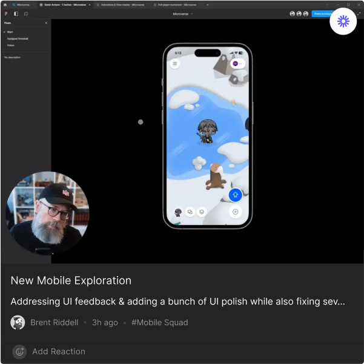

<section class="weekly_drop">
  <div class="weekly_drop__screen">
    <p class="weekly_drop__text">Weekly Drop · May 15, 2023</p>
    <p class="weekly_drop__text">
      This week, Brent shared two mobile app explorations<br />
      which address feedback on the UI, adds polish, and<br />
      addresses several issues. Lea has been working on a new<br />
      information architecture for the Dashboard. Lastly, Rachel<br />
      has shared the Consumer Squad's Q2 roadmap.
    </p>
    <div class="weekly_drop__text-and-icons">
      <div>
        <p class="weekly_drop__mobile-squad"># Mobile Squad</p>
        <p class="weekly_drop__posts">18 posts</p>
      </div>

      <div class="weekly_drop__four-icons">
        
        
        
        
      </div>
    </div>
    
  </div>
</section>
